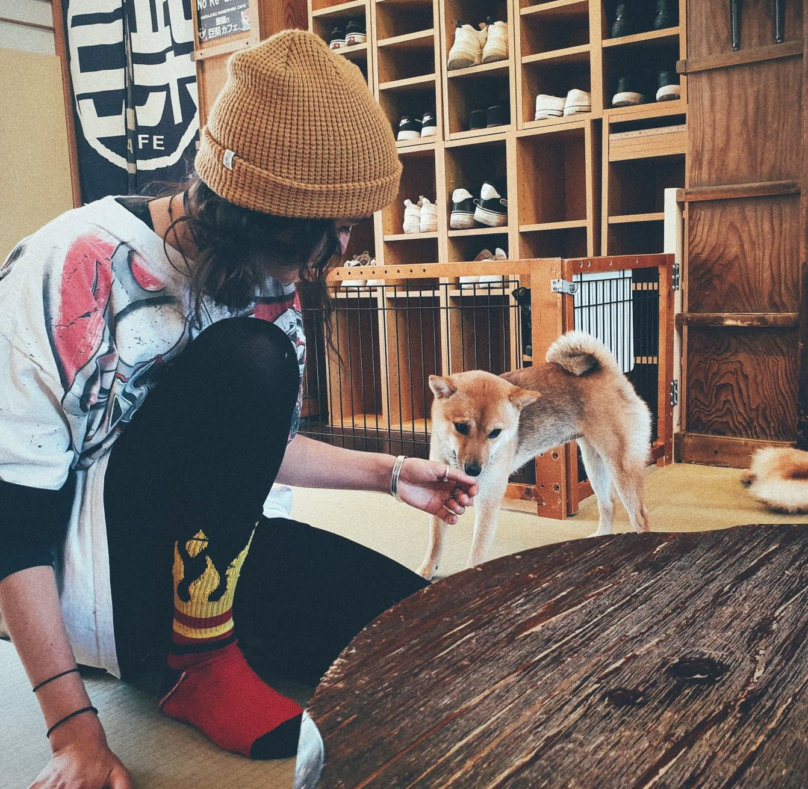
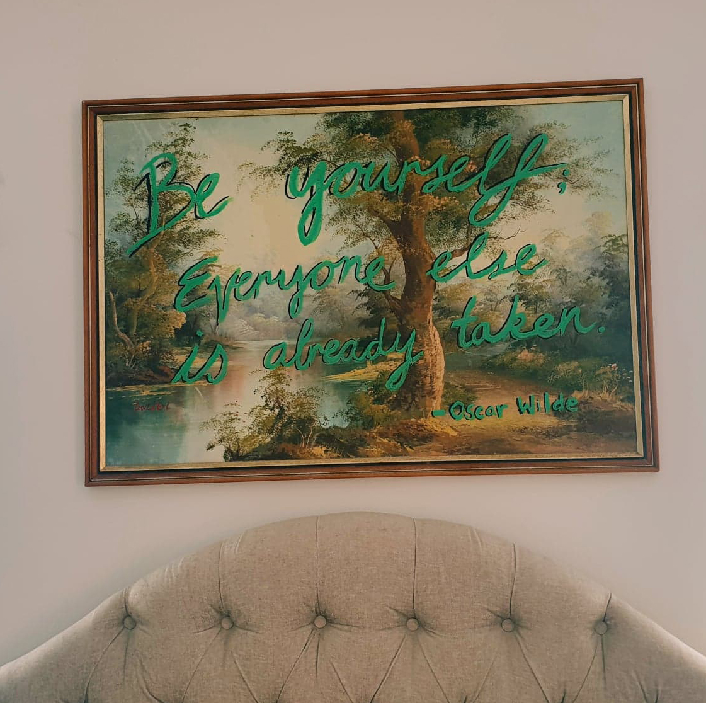
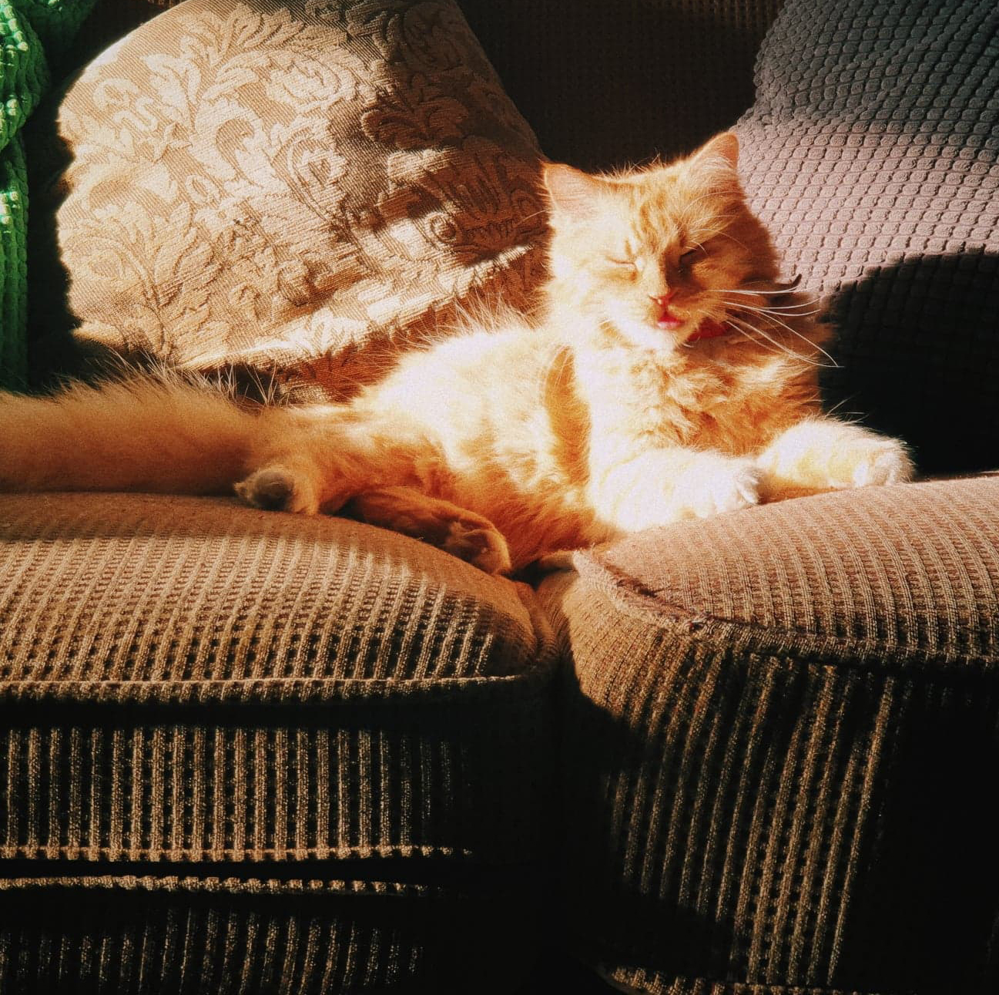
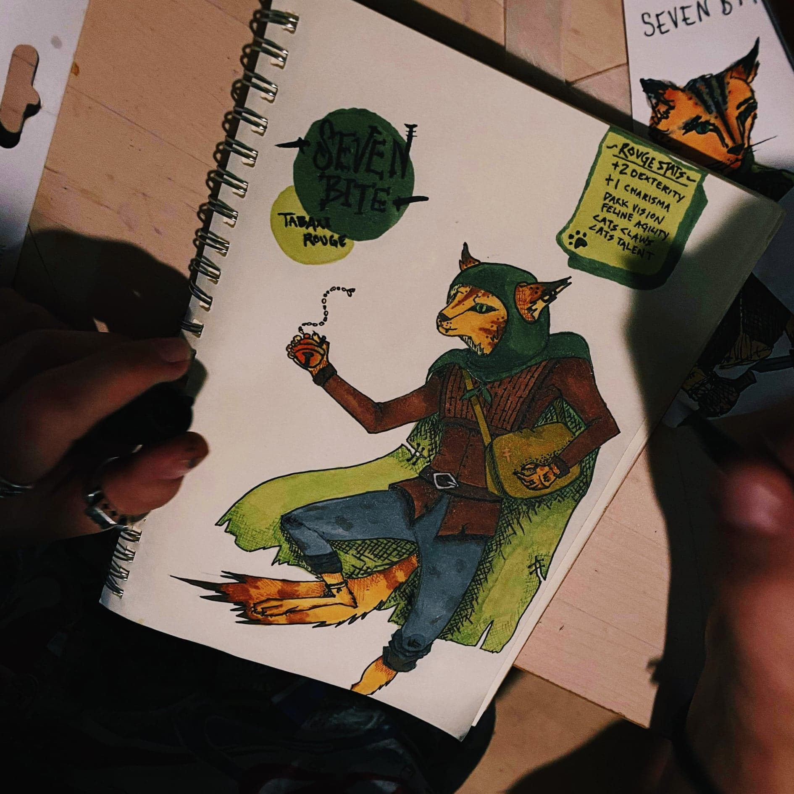

Jumping Spiders as pets
01.02.21

Jumping Spiders make an entertaining and easy pet for anyone! They are inquisitive and non-aggressive, so it makes handling them super easy. Not to mention, they're adorable, so even people with a fear of spiders will find a soft spot for these little guys. All you need is an enclosure, and a steady supply of small bugs. I've had mine for just over 5 months, and she is such a wonderful little character.
Shiba Inu Cafe
04.02.21

Whilst on a trip to Japan last year, before travelling was thrown out the window,
I was lucky enough to go to a Shiba Cafe!
I was absolutely over the moon, as the Shiba Inu is one of my favourite dog breeds.
For half an hour you get to sit in a room with about 10 Shiba dogs and let me tell you, it is pure bliss.
If you are even half as much of a dog fan as me, I can't recommend one of these places enough!
Upcycling op-shop art
07.03.21

I don't know about you, but somehow I always leave it until the very last minute to make gifts for my friends and family.
While this is stressful, it has lead to a number of excellent gift ideas I would probably not have come across otherwise.
One of these is going to your local op-shop, finding an old framed landscape painting, and taking it home to paint on.
I have done quite a few of these now, and every one has turned out awesome!
The one pictured here is one I made with a quote from Oscar Wilde for my mother; as she is a big fan, but there are many options to what you could paint on it.
My personal favourite is to paint Studio Ghibli characters into Australian landscapes.
Need to get someone a gift? Why not give it a go!
Baron
14.03.21

This is my little cat Baron, I have had him since he was 5 weeks old and he and I are best mates!
His favourite pastimes include; play fighting, sleeping, eating, drinking out of my cup, climbing trees and running up and down the stairs in the middle of the night.
He is a softie at heart and has never successfully killed anything, not even a butterfly. I hope you enjoy him as much as I do!
Drawing your DND character
01.04.21

DND is a great way to have fun with your friends, what makes it even more fun is if you can show off your fancy character to everyone else.
During lockdown my partner and our friends decided to create DND characters, going the extra mile and drawing them was optional but I am so glad I did!
It's a lot of fun to think about what your characters outfit or accessories might be, and a good way to kill time if you're bored in lockdown like we were!
My character is a Tabaxi Rogue named Seven Bite.